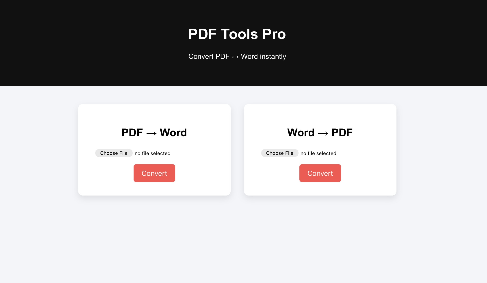

My Projects
Below are some of the projects and experiments I have created while learning technology, web development, and digital tools. Each project helped me gain practical experience and improve my understanding of how websites and online platforms work.

Movie Downloader
The Movie Downloader project was created as an experiment to understand how entertainment resources can be shared through a website. The main goal of this project was to provide users with an easy and simple way to access movie links from a clean and organized web page. While building this project, I focused on making the website user-friendly so that anyone visiting the page could easily find and download the movies they were looking for. I learned how to organize links properly, structure the layout of a webpage, and create a simple navigation system that makes browsing easy. One of the most important lessons from this project was understanding how websites manage external resources. Instead of hosting large movie files directly on the website, I used links that redirect users to the appropriate download sources. This helped me understand how content websites manage storage and bandwidth while still providing useful resources to users. Working on the Movie Downloader project also improved my design skills. I experimented with layouts, buttons, and navigation styles so that the website would feel clear and organized rather than confusing. Overall, this project helped me understand the importance of simplicity, usability, and proper link management in web development. It also encouraged me to explore more advanced ideas about how digital content can be organized and distributed online.
Visit Project
Song Downloader
The Song Downloader project was created to provide a simple and convenient way for users to access and download music files. Instead of building a complex website, I decided to host the music collection on Google Drive and create a webpage that provides access to the shared folder. This project helped me understand how cloud storage services can be used to distribute digital resources efficiently. By hosting the songs on Google Drive, I was able to store a large number of files without worrying about server storage limitations. Another important part of this project was making sure users could easily navigate the folder and download the songs they wanted. To achieve this, I carefully organized the files and wrote instructions explaining how users can browse the folder and download songs safely. Through this project, I learned about file permissions, sharing settings, and how cloud platforms manage public file access. These are important concepts because many modern websites rely on cloud storage to deliver files and media content to users. The Song Downloader project may appear simple, but it represents an important step in my journey of learning about web platforms and online file distribution. It also helped me understand how technology can make entertainment easily accessible to people.
Open Songs
Student Form Submission
The Student Form Submission project was developed to explore how websites collect information from users through forms. Forms are an important part of many websites because they allow visitors to submit data such as registrations, feedback, or applications. In this project, I created a webpage where students can enter their details and submit them through an online form. This helped me understand how input fields, buttons, and form structures work together to collect information from users. While building the project, I also focused on designing the form so that it would be simple and easy to fill out. Clear labels, proper spacing, and organized fields were used to ensure that users would not feel confused while entering their information. Working on this project helped me understand the role of forms in real-world applications such as school registrations, surveys, and online services. It also introduced me to the concept of handling user input and organizing collected data properly. Overall, the Student Form Submission project helped me learn about interactivity in websites. Instead of just displaying information, the website allows users to actively participate by entering and submitting their details. This experience helped me develop a better understanding of how interactive web systems work.
Open Website
PDF to Word Converter
The PDF to Word Converter project was created to solve a common problem faced by many students and professionals. Often documents are shared in PDF format, which is difficult to edit without specialized tools. This project provides a simple solution by allowing users to convert PDF files into editable Word documents. While working on this project, I learned about the importance of document formats and how different file types are used for different purposes. PDF files are commonly used for sharing documents because they preserve formatting, but they are not designed for editing. By creating a tool that helps convert PDFs into Word documents, I explored the concept of digital document processing. This helped me understand how online tools can improve productivity by making it easier to modify and reuse documents. Another important aspect of this project was making sure the interface remained simple and easy to understand. Users should be able to access the tool quickly without complicated instructions. This project reflects my interest in creating practical digital tools that can help people save time and work more efficiently.
Open Converter
File Sharing Website
The File Sharing Website project was created to experiment with how digital files can be shared and distributed online. In today’s world, people frequently need to send documents, images, or other files to friends, classmates, or colleagues. This project explores how a simple website can act as a platform where users can access shared files easily. Instead of sending files individually to different people, the website allows files to be placed in one location where everyone can access them. While developing this project, I focused on making the interface simple so that users could quickly find the files they needed. Clear structure and navigation are important in file-sharing platforms because users must be able to locate resources without difficulty. Through this project, I also learned about the concept of online collaboration. File-sharing tools are widely used in schools, businesses, and organizations to allow multiple people to work with the same resources. Although the project is simple, it helped me understand the fundamentals of digital resource management and how websites can support collaboration and information sharing.
Open Website